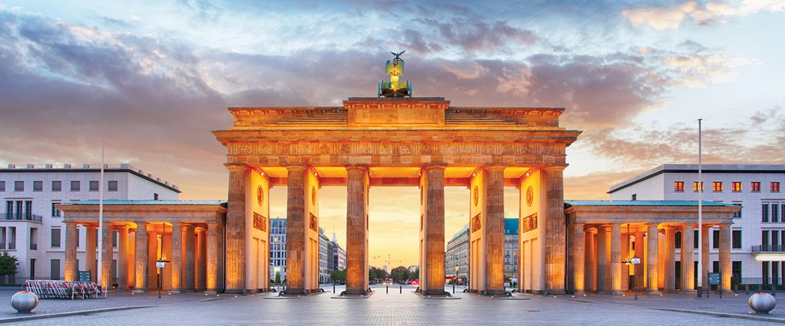

Podróże po stolicach Europy
Na stronie będą opisane stolice państw Europy. W Europie znajduje się 46 państw.
Paryż
- Stolica Francji
- Położone w centrum Basenu Paryskiego, nad Sekwaną
- Największe miasto Francji
- Miasto miłości, sztuki - stolica mody
Warszawa
- Stolica Polski
- Największe miasto Polski
- Położone w jego środkowo-wschodniej części, na Nizinie Środkowomazowieckiej, na Mazowszu, nad Wisłą
- Data założenia XIII wiek
- Warszawa jest miastem wyróżnionym Krzyżem Srebrnym Orderu Wojennego Virtuti Militari
Berlin
- Stolica Niemiec
- Największe miasto Niemiec
- Jest drugim, po Londynie, miastem w Unii Europejskiej pod względem liczby mieszkańców
